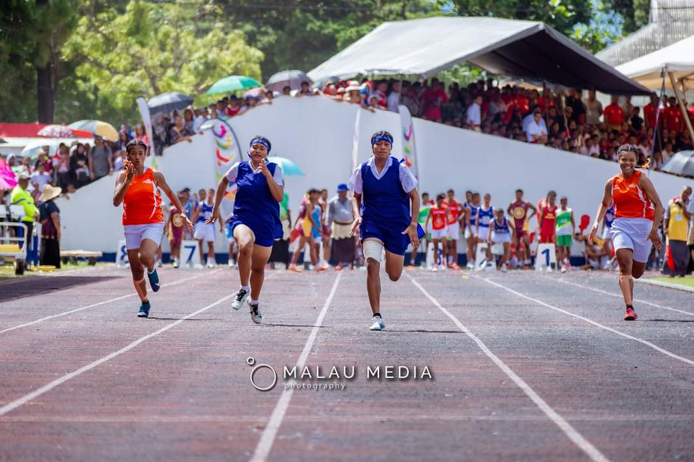

Inter-College Sport Competition
Queen Salote College is one of the hardest working people not only the teacher but also the students in any field. The main purpose of allowing girls to enter the institution was to train them to become good mothers and wives, which has become true without a doubt. As the pictures and video shown below clearly demonstrate how they will be good mothers as they work very hard. Not only do the sports team do their best but also the rest who do not join the sport cheer up the sports team.
|  |  |
|
|---|---|---|